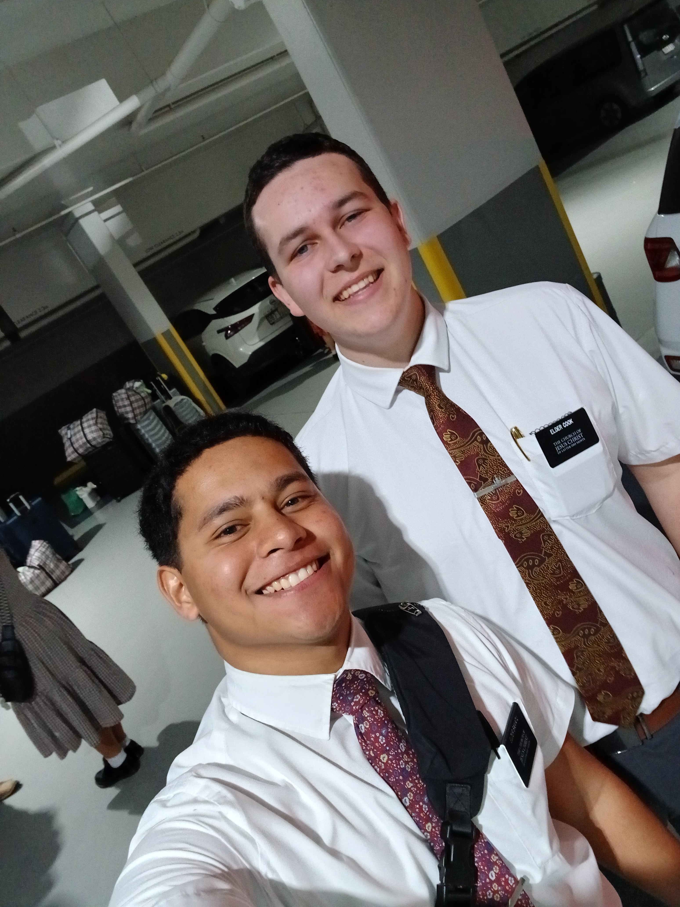
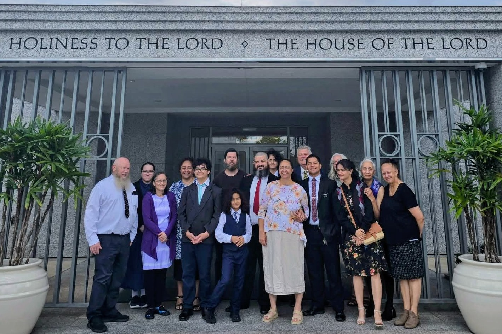
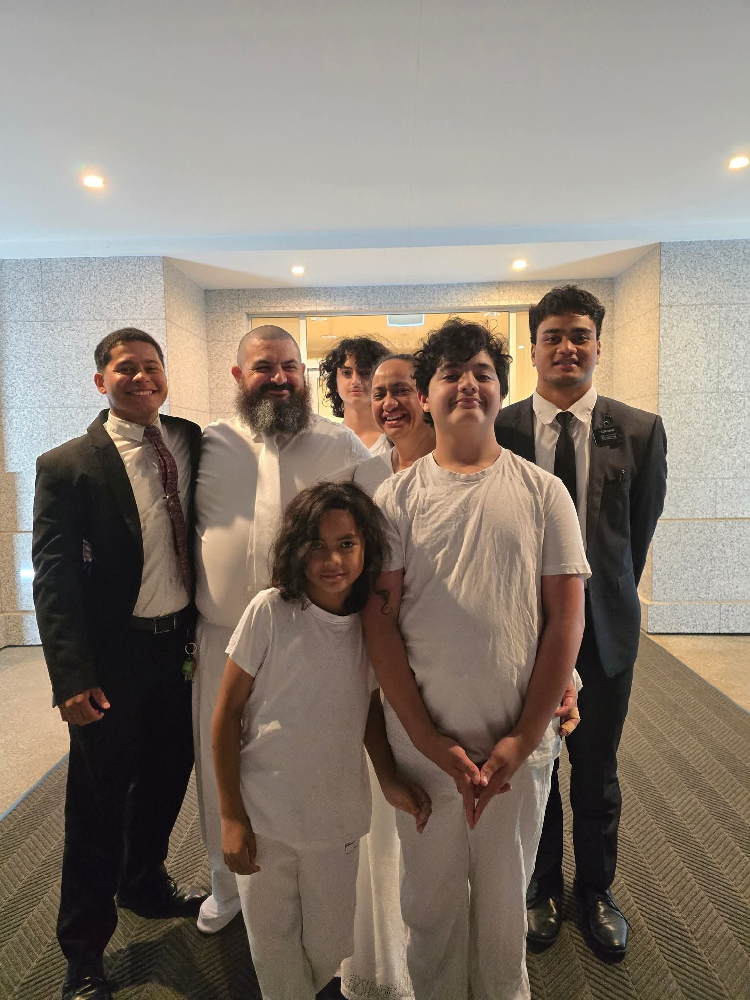

My Faith Journey
My faith has been an important part of my life. Through the Church, I have learned many lessons about faith, service, family, and becoming a better person. Some of my favorite memories come from serving the people of Australia and the families that I helped come closer to the Lord.
One of the experiences that has had a big impact on me was serving a mission. During this time, I met many different people and had experiences that helped me grow. There was this family and they are the Perry Family. I love them so much. Their journey started 4 years prior. They came a long way. I've spent a total of 6 months with them and I have seen their growth. After Brother Perry was Baptized, I was assigned to another ward. I was heart broken. After I left for over 4 months later the kids wanted me to Baptize them and I was honored to do so. After all that I got the chance to witness their sealing as a family in the temple.
My Church experiences have taught me that faith is something that continues to grow throughout life. I know that I still have many things to learn, but the experiences I have had have helped me become stronger. I am grateful for the people who have supported me and for the memories that continue to remind me of what is important.
Important Memories



A Scripture That Inspires Me
One scripture that is meaningful to me is found in the Book of Mormon. It reminds me to have faith and continue moving forward even when life becomes difficult.
You can read the scripture and learn more about the Book of Mormon on the official Church website:
Read the ScripturesMy Faith Today
My faith continues to be a part of who I am. I try to remember the lessons I have learned from Church, my family, friends, and the people I have served. These experiences remind me to have patience, help others, and continue working toward becoming the person I want to be.